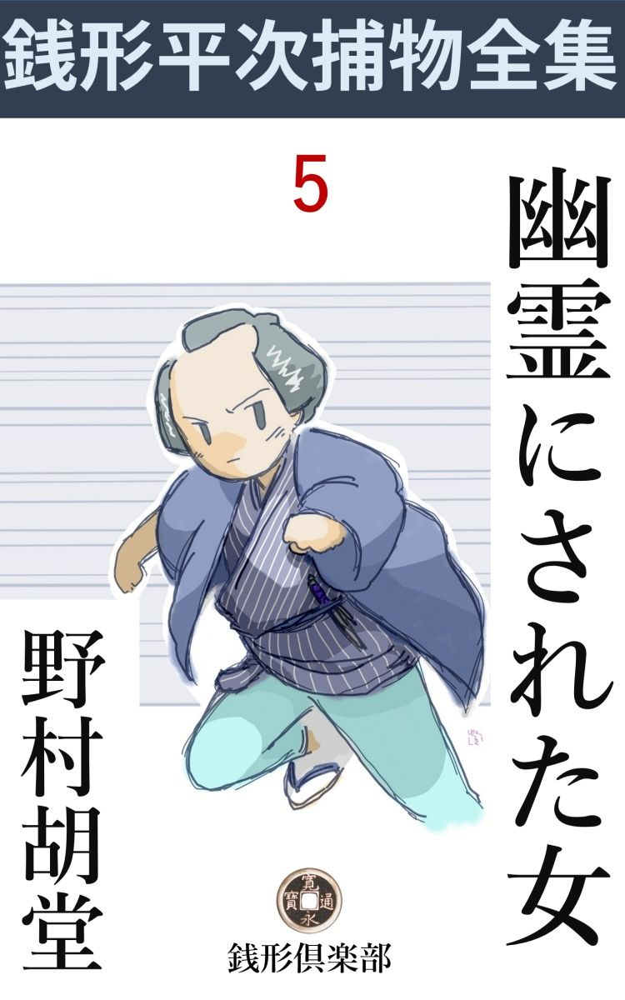
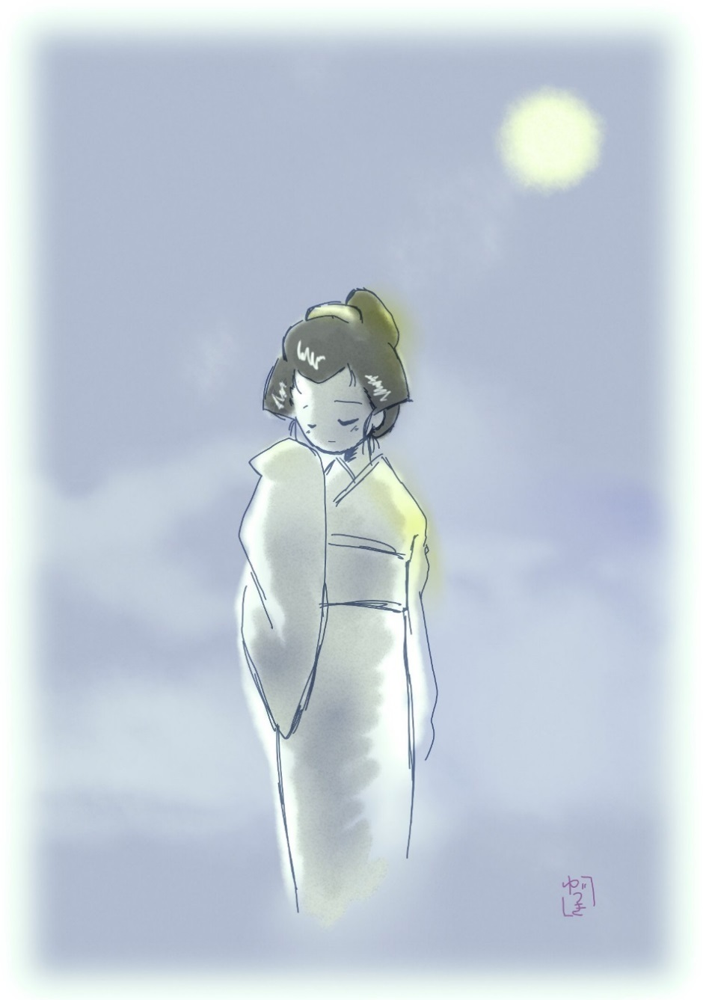

| 幽霊にされた女: 銭形平次捕物全集第５話 (銭形倶楽部) | |
| 野村胡堂 | |
| ZENIGATA CLUB (2018) | |

一
「親分、聞きなすったか」
「何だ、騒々しい」
銭形平次の家へ飛込んで来た子分のガラッ八は、芥子 玉 絞 りの手拭を鷲掴 みに月代 から鼻の頭へかけて滴る汗を拭いております。
「大変な事がありますぜ」
「又、清姫が安珍を追っ駆けて、日高川で蛇になった------てな話だろう」
「冗談じゃねえ、今のはもっとイキの宜い話だ。何しろ、仏様のねえお葬 いを出したのはお江戸開府以来だろうって評判ですぜ」
「何？ 仏様のねえお葬い、------どこにそんな事があった」
平次もツイ乗出しました。日頃は話半分にしか聞かれないガラッ八ですが、今日持って来たネタには、何かしら人の好奇心をそそる重大性がありそうです。
「近江屋の小町娘、------お雛 が行方知れずになった話はお聞きでしょう」
「それは聞いた。観音様へお詣りに行った帰り、供をしていた女中の眼の前で行方知れずになったという話だろう」
「それが、海河に落ちて死んだか、人手にかかったか、三日目から毎晩のように化けて出たって言いますぜ」
「怪談話なんか聞いてやしねえ、馬鹿野郎」
「馬鹿野郎は情けねえな、それがみんな本当の話なんだから恐ろしい」
「それで、仏様のない葬いを出したって筋だろう。紋 切 型 の怪談じゃないか、江戸開府以来もねえものだ」
「ところがね親分、それが皆んな幽霊の注文なんだって言いますぜ」
「何？ 幽霊の注文、贅沢な亡者 もあったものじゃないか」
「葬いを出してくれなきゃア浮ばれないから、私の持物のうちでも、日頃から大事にしていたものや金目のものを皆んな纏 めて、身体の代りに、小判で三百両棺の中へ入れて、祖先の墓の側に埋めて貰いたい------って」
「八ッ、それは本当か」
「本当にも何にも、町内で知らねえのは銭形の親分ばかりさ」
「飛んでもねえ野郎だ。俺の住んでいる町内で、そんな人を舐 めた事をしやあがって、ガラッ八、来い」
帯をキュッと締め直すと、白 磨 きの十手を手拭に包んで懐の奥へ、麻裏を突っかけて、パッと外へ飛出します。
「親分、どこへ行きなさるんだ。断って置くが、あっしのせいじゃないぜ」
平次の意気込に驚いて、少しおどおどするのを、
「何をつまらねえ、誰も手前 のせいだなんて言やしねえ。その面は又幽霊に向く人相じゃないよ、浅草の化物屋敷で、大入道の役者を一人欲しいって言って来たぜ」
「チェッ」
「怒るな八、近江屋へ真っ直ぐに案内しろ。親達に歎きをかけた上、大金までせしめようと言うのは、如何にも憎い幽霊だ。三日経たない内に、キッと天道 様の下で化けの皮を剥いでやる」
「へエ、恐ろしい意気込みなんですね、親分」
「覚えて置け、俺はそんな細工をする化物は大嫌いなんだ」
まだその頃は、若くもあり、血の気も多かった銭形の平次は、こう言ってその太い眉をひそめました。寛永から明暦 、万治年間へかけて鳴らした捕物の名人、一名縮尻 の平次は、水際立った良い男でもあったのです。
二
花川戸の質両替屋、近江屋治兵衛は観音堂の屋根の見える限りでは、並ぶ者なしと言われる大 分限 、女房のお豊との間に生れた一人娘のお雛 は、江戸の町娘の美しさを一人で代表するのではないかと思うような素晴らしい容貌 でした。
あまり美し過ぎるのと、親達の選り好みが激しいので、十八の夏までも定 まる婿 がなく、贅を尽した振袖姿を、お供沢山に、街へ現わしては、界隈の冷飯食いの心魂を奪うという有様だったのです。
或る日、女中のお勢と一緒に、ツイ目と鼻の観音様へお詣りをして、伝法院の前まで来ると、お勢がほんのちょいと眼を外 すうちに、お雛の姿が見えなくなってしまったのです。
大地へ吸い込まれたか、それとも仁王様の草鞋 に化けたか、そうでも思わなければ、考えようのない不思議な失踪 に、お勢は暫く呆気 に取られてしまいました。------多分、他所 見 をしているうちに、自分へからかって、先へ帰ったのだろう------そんな暢気な心持で主人の家へ帰って来ましたが、元より先に帰ったわけではなく、お雛の姿は、それっきり、誰の目にも付かなかったのです。
近江屋の騒ぎは大変なことになりました。出入りの頭 を総大将に、番頭小僧から出入りの商人、町内の若い者まで狩り集めて、観音様を中心に、界隈の路地裏からゴミ箱の中までも探し廻りましたが、どこへ消えてしまったか影も形もありません。
あまり綺麗過ぎて魔がさしたか、人買い人さらいと言った類 の悪者にしてやられたか、それとも、美しい虹のように蒸発してしまったか、噂は噂を生んで、際限もありません。
三日目------の夜でした。
店の大戸を下ろしてしまってから、ホトホトと叩く者があるので、そこに居た小僧の兼吉が、何の気もなく臆病 窓 を明けてヒョイと覗くと------、
ツイ軒の下の暗がりに、紛 れもないお雛が、水に濡れたような姿でションボリ立っていたのです。向う側の屋根の上にかかった、青白い月に照らされて、それが又何とも言えない物凄さ。
「あッ、お嬢様」
あわてて潜 りを開けて、店中の人が飛出しましたが、夏ながら凍 るような月夜で、蟻 の這うのも見えそうですが、兼吉が見たという、お雛の姿はそこにはありません。
「馬鹿ッ、夢でも見たんだろう」
大僧達に叱られて、兼吉はベソを掻いてしまいました。
しかし丁度臆病窓の下、乾いた土の上が一尺四方ばかり、そこだけぐっしょり濡れているのを見て、叱った大僧達も思わずハッとして顔を見合せました。
翌る夜の------丑刻 頃。
手水 に起きた主人 の治兵衛が、フト昨夜の話を思い出して手洗い場の障子を開けて、丈夫に出来た格子から、月明りにすかして中庭を見やりました。期待するような、物なつかしいような、そのくせ恐ろしく歯の根も合わないような異様な心持で、右から左へ眼を移すと、------
燈篭の蔭から半分身体を出してこっちを差覗くようにションボリ立っているのは、紛れもなく娘のお雛、青白い額口から、少しばかり血をにじませて、白々としたものを引っかけた姿は、この世の者とも思われません。

「あっ、お雛じゃないか。お待ち」
横手の雨戸に飛付いて、大町人らしい厳重な締りをガタガタ外し、一枚開けると、夢中になって中庭へ飛出しましたが、その時眼に触れるものは、時代のついた石燈籠ばかり、お雛の姿は掻き消すように失せてしまいました。
「お雛がどうかしましたか」
女房のお豊も、寝巻姿のままで飛出して来ましたが、主人治兵衛が、庭石の上にドッカと腰を下ろして、狐につままれたような顔をしているのを見るだけ、傾 く月影にすかしても、猫の子一匹隠れる場所があろうとも思われません。
三
「親分、こう言うわけだ。親としては、これほどの歎きはない、死んだなら死んだでもいい、せめてその葬式 だけでも出してやりたい、と思うのも無理はありますまい」
近江屋の主人治兵衛、丁度折よく訪ねて行った、銭形の平次を奥へ招じ入れて、娘の行方不明になった前後から、空 の葬式を出した経緯 まで詳 しく話しました。
「お察し申します。が、それは世間で言うように、矢張りお嬢さんの幽霊の望みでなすったのでしょうか」
「飛んでもない。娘はそれからも二三度姿を見せましたが、一言も口を利くことは御座いません。空葬式を出せと言ったのは、それ、伝法院の前に何時も出ているあの易者 ------」
「へエ------」
「観相院とか言う髯を生やした易者の勧めでしたよ」
「へエ------」
「あまり娘が可哀相で、死んだ者なら遺骸 を探し出して、せめて葬式だけでも出してやりたいと、家内が頻 りに言うので、観相院へ行って易を立てて貰うと、------これはいけない、娘さんの遺骸 は、海の沖へ流れてしまったから、二度と再びこの世の人の目に触れることではない。そのためにあの世の苦患 は大変、娘さんを可哀相に思うなら、日頃大事にしていた品物と、三百両の小判を棺桶へ入れて、菩提 所 へ葬 ってやんなさい------とこう言います」
「で、その通りなすったのでしょうな」
「致し方がありません。私共に何の考えもあるわけはなし、それ位のことで娘の後生 が楽になれば、まことに安いもので御座います」
治兵衛はこう言って首垂 れました。見たところ四十前後、大家の主人らしい落着きと品の中にも、何となく迷信深そうな、篤実 らしさも思わせます。
「驚きなすっちゃいけませんが、お嬢さんは生きていますよ」
「エッ」
唐突 な平次の言葉に、治兵衛はのけ反らんばかり。
「お聞きでしょうが私は滅多なことで自分から飛出しません。お上の御用は勤めておりますが、人に縄打つ商売の浅ましさを、つくづく知っているからで御座います。ところが、子分の者の話や、世上の噂で、お宅のお嬢様の災難を聞いて、あまりの事にジッとしていられなくなって、ツイ押付けがましくやって来たようなわけで御座います」
「------」
「お嬢様は決して死んじゃいません。それは立派に騙 りで御座いますよ。あまりやり方が憎いので平常 にもなく、私はやって参りました。------口幅ったい事を言うようだが、三日経たないうちに、キットお嬢様を探し出して上げましょう」
「本当でしょうか親分、------もし娘を助けて下さったら、私はこの身上を半分差上げても惜 しくはありません。万に一つも生きているものなら、どうぞ助けてやって下さい」
大家の主人の貫禄を忘れて、治兵衛は畳の上へ手を落してしまいました。
「そんな事をなすっちゃ困ります。まアお手をあげて下さい。それに私は欲得ずくで飛出したわけじゃ御座いません」
「それはもう、平常 から親分の気性はよく存じております。家内にも聞かせて、喜ばしてやりましょう」
手を叩くと、転がるようにお豊、
「様子は隣室で聞いておりました。親分、本当に娘は生きておりましょうか」
三十六七の盛りを過ぎた女房姿ですが、昔はどんなに美しかったろうと思うお豊、少し取乱した様子で、平次の膝に縋 り付かないばかりです。
「お疑いもあるようだ、こうなすって下さい。伝法院の門前にいる易者 が、そのまま店を張っているようなら私はこの事件から手を引きましょう。もし又、易者の観相院が、二三日此方 見えないというようだったら、何も彼も騙 りの仕業で、お嬢様の身の上には万に一つも間違いはありません」
こう言う平次の言葉には自信が充ち満ちておりました。
四
小僧の兼吉を伝法院の門前まで走らせると、平次の予言した通り、易者の観相院は三日前から顔を見せないという話、近江屋夫婦も今更呆気 に取られましたが、その代り、死んだと思った娘のお雛が、或いは生きているかも知れないという新しい望みが湧いたわけです。
「この上は見るまでもありますまいが念のためにお墓へ案内して下さい」
銭形の平次、近江屋治兵衛、それに番頭が一人、鳶 頭 が加わって橋場の寺へ駆け付け空 柩 を葬った墓を見ると、巧みに誤 魔 化 してはありますが、発掘した形跡は疑うべくもありません。
「御安心なさい。お嬢さんはキット無事でかえりましょう」
平次はこう慰 めて置いて、一たん自分のところへ引取りました。
後で、近江屋治兵衛、死んだと思ってあきらめていた娘が、多分無事に生きているだろうとなると、いても立ってもいられない、恐ろしい焦躁 に悩まされます。
「いっそのこと、娘を返したら、大金をやるという高札でも出して見ようか。欲にころんで空 葬 まで出さしたくらいだから、金高次第では、娘を返す気になるかも知れない------」
物持の人の親らしい考えで、平次が止めるのも聴かず、役所の許しを得て、江戸の目抜 の辻々に、真新しい「尋ね人」の高札を建てさせました。
高札の文句や寸法には自 ら型があります。「江戸、花川戸質両替渡世、近江屋治兵衛娘雛 、当年十八歳、右尋ね当て無事親許に引渡されし方には、御礼として金一千両相違なく差上ぐべく候也」と書いて、あとは人相やら、手続きやらを細々と認 めてあります。
江戸中は、暫くこの噂で持ちっ切り、三日経たないうちに、お雛が五六十人も現れそうな勢いでしたが、さて実際にそうは行かないものと見えて、治兵衛夫婦の気組みや予想を裏切って、心当りを言って出る者は一人もありません。
ことに弱ったのは、銭形の平次でした。三日と請合った日は今日限りとなりましたが、どこへどう隠されたか、お雛の在所 を嗅ぎ出す手掛りも、その誘拐 の悪者の当ても付かないのです。
近江屋は質屋渡世で、随分客に泣かれもし商売の事では頑固 なことも言いましたが、近頃は身上が出来て、三文質は取りませんから、そんなに怨 まれる筋の罪は作った覚えもありません。
治兵衛はまことに好人物の旦那、お豊は若い時は評判の美人だったと言いますが、ここへ嫁入りしてもう二十年にもなります、その上近い親類というものがないのですから、財産争いする相手も見付からない有様です。
平次はすっかり持て余してしまいました。
「こいつはいけねえ。あんな綺麗な娘一人、どこへ隠して置いたってピカピカするから、三日と知れずにいる筈はないと思ったのは、俺の了見違いだ。さて、こうなりゃ始めからやり直しだぞ」
高々と腕を拱 いて、朝っから軒の釣忍 と睨めっこをしております。
「親分、今日は」
言葉より先に、格子をガラリと、入って来たガラッ八。
「ああガラッ八か、何か変った事でもあるのかい」
平次は腕を解きましたが、上眼使いに妙に沈んだ調子です。
「親分にもねえ、何て不景気なんだろう、近江屋のはまだですかい」
「それが解りゃ手前 なんかに何か変った事------なんて訊きゃしねえ」
「御挨拶だね、生憎変った事と言ったら、気のきいた雌 犬 にも吠え付かれねえ」
「不景気な野郎じゃねえか、相変らず小遣いがねえんだろう」
「図星ッ、さすがに親分は眼が高けえ、そこを見込んで少し貸してもれえてエ位のものだ」
「馬鹿、人が見たら笑うぜ、手なんか出して、ホラ、入用だけ持って行くがいい------たんとはねえよ」
平次は懐から財布を出して、投り加減にガラッ八の方へ押しやりました。
「有難 てえ、だから親分は感心さ。世間では言ってますぜ、銭形のは腕前と言い、気前と言い、男っ振りと言い、大したものだって」
「取って附けたようなお世辞を言うな」
「へッ、へッ、どうも今日はまん がよかったよ、紅い結綿 で足を縛った烏なんてものは、滅多に見られる代物 じゃねえ」
「何、何だとガラッ八、足を結綿で縛った烏だ、そんなものがどこにいたんだ」
平次の気組は、急に熱を帯びて、ガラッ八の腕------財布を拾ったばかりの二の腕をむんずと掴 みました。
「何でもありゃしませんよ、馬鹿馬鹿しい」
「いや、何でもなくはない、どこにそんな烏がいた」
「驚いたな、どうも、先刻 子供達が河岸っ縁で捉 えて、自身番へ持って来ましたよ。緋鹿の子の結綿で足を縛られて、その上櫛 を差し込んであるんだから、どんな烏だって飛べやしません。バタバタやってるのをわけもなく捉えたが、鴨 や雉 と異 って、真黒な烏じゃ、煮て食うわけにも行かねえ」
「それは大変だ、来いガラッ八、その烏に逢って訊きてえことがある」
「冗談でしょう」
平次は有無 を言わせず、外へ引張り出しました。昼下がりの花川戸の往来は、暑さに暫く人足も絶えて、何となくヒッソリしております。
五
子供達の捉 えた烏は、その儘自身番に縛られて、四方 を物好きそうなのが、ワイワイ取巻いておりました。
「どれだ、その結綿と櫛 てえのは？」
「親分、お出でなさい、これがその二た品ですよ。妙な悪戯をする人間もあったものじゃ御座いませんか」
番太の爺親が出したのは、燃えるような緋鹿の子の結綿と、鼈甲 の櫛が一つ。
「ちょいと借りてえが、宜いだろうね」
「え、え、どうぞ御自由に」
平次はこの二た品を内懐に入れると、烏には眼もくれず、その儘近江屋に飛んで行きました。
主人 の治兵衛に逢って、
「この結綿と櫛に見覚えはありませんか」
と言うと、
「あッ、これは娘の頭に着けていたもので御座います。どこから見付かりました、これがある位なら娘の在所もわかったでしょう。これお豊、お豊、ちょいと来てお礼を申し上げな、親分は娘を見付けて下すったよ」
夢中になって騒ぎ立てる主人を押えるように、
「待って下さい、まだお嬢さんを見付けたわけじゃありません、漸く手掛りが手に入っただけですよ」
平次は這々 の体で外へ飛出しました。
「こいつは弱った。さて、これからどうしたものだろう」
ブラリと帰って来ると、後 れ馳 に追い付いたガラッ八、
「親分、当りは付きましたか」
ぬっと横合から拙 い顔を出します。
「いや、まるで解らねえ」
「へエ------」
「ところでガラッ八」
「へエ------」
「烏というものは、飼鳥ではないな」
「そりゃア言うまでもありません。東天紅 ともホオホケキョーとも鳴く烏 はねえ」
「黙って聴け」
「へエ------」
「何処の鳥屋にも、烏がいた例 はあるまい。堂宮にも烏は飼ってねえな」
「へエ------」
「何とか言えよ」
「黙って聴け------って言ったじゃありませんか」
「融通 のきかねえ野郎だな------、ところでお前は、烏のいた場所を知ってるか」
「知ってますとも、奥山にも上野の森にも、向島にも------」
「馬鹿ッ」
平次は黙々として歩き続けました。
「あるよ、親分」
不意にガラッ八。
「あッ、吃驚した、何があるんだ」
「忘れちゃいけねえ、烏を飼っている家」
「何、何だと、烏を飼っている家がある？ どこだ、サア言え」
「言いますよ言いますよ、胸倉を掴まなくたっていい」
「娘一人の命が危ねえんだ。手前 の咽 喉 仏 などを可愛がっていられるか」
「驚いたな、どうも」
「手前は話に無駄が多くていけねえ、烏を飼っている家てえのはどこだ」
「奥山に近頃出来た化物屋敷ですよ」
「何？」
「土左衛門の臓腑 を烏がついばむところがあるんだ。土左衛門は人形だが、烏は真物で、種を聞くと、桶へ入れて菰 の間に隠しておく、鰌 をついばむんだってね、そりゃ凄いぜ親分」
「本当か、それは」
「本当も嘘もねえ、烏があんまり鰌 を食い過ぎるんで、五六羽飼って取っ代え引っ代え出すって言いますぜ、------だからたまにはあんなインチキな見世物も見て置くものだね、親分」
「ガラッ八、それでわかった。礼を言うぞ」
「どう致しまして、へッへッ」
ガラッ八は、生れて始めて親分に礼を言われたのです。
「二人だと人目につく、手前 は帰って、素直に待ってろ」
「へエ------」
「何にも人に言うな」
平次は裾を取ると、七三にからげて、奥山へ、驀地 に飛びました。
六
浅草の奥山 は、その頃田圃 続き、雷 門 前のにぎわいと比べては、表と裏にしても、あまりに違い過ぎる風物でした。
そこへ、春から小屋を掛けて、広々と建て廻したのは、何時の世にもくり返される見世物の『化物屋敷』。場所が淋しいのと、足場が存外宜いので、夏の始めから江戸中の人気を呼んでおりました。
ずっと下 って天保年間、東両国に小屋を出した目吉の化物屋敷と、変死人見世物は、年代記物になるほどの人気を呼びましたが、奥山の化物屋敷は、それよりずっと前で、興行元は轟 の権三、四十そこそこの浪人者上り、額の左口に物凄い瘡痕 のある、その仲間では顔の利いた男でした。
中は人形と張子と真物の人間とを、巧 みにあしらって、細工も思い付きも念の入ったもの。木戸銭を払って、存分におどかされて、ハアハア言いながら喜んだのは、当時の江戸っ子の物好きなところでしょう。
平次がそこへ着いたのは、丁度人の出盛を越した申刻 下り、交通の不便な時代の客で、もうボツボツ帰り支度をする者の多い時分でした。
泥絵の大看板をくぐって、二十四文の木戸を払って入ると、中は俄然 として別世界になります。
入口を一パイに飾ったのは、遠見を使った相馬の古御所、人形をあしらって、これは通り一ぺんの出来ですが、細い道を辿 って、奥へ踏み込むと驚きました。
最初に出て来たのは一つ目小僧、フラリフラリと提灯を下げてすれ違うと、頭の上から野衾 がバサリと顔を撫でます。薄暗がりから、ろくろっ首がニョロニョロと飛出すと思うと、横町からは見越しの入道が睨んでいるという拵 え、------そんなものは別に驚きませんが、所々ジメジメした足元に、大 蝦蟇 が飛出したり、蛇の尻尾が額 を撫でたりするのには、虫嫌いの平次は少し閉口しました。
折々は、キャッキャッと言う騒ぎ、物好きに入った女達が、あまり道具立が凄いのに怯 えて、引返しもならず、悲鳴をあげるのでしょう。
攻道具沢山な道を暫く辿ると、パッと明るくなって、噂に聞いた水死人の人形があります。葦 の繁った大川端の風物をなぞらえて、そこへ水ぶくれになった女の土左衛門が横 わり、時々烏が飛んで来ては、臓腑 をついばむという趣向です。ガラッ八に種 を聞いて、わかり切ったつもりの平次ですが、さすがにこの道具立の巧いにはギョッとしました。
次の部屋は一面の蘭 塔婆 、舞台をぐっと薄暗くして、柳の自然木の下、白張の提灯の前に、メラメラと焼酎 火 が燃えると、塔婆の蔭から、髪ふり乱して、型の如き鼠色の単衣を着た若い女が両手を胸に重ねてスーッとせり出します。
たったこれだけの事で、まことに平凡 な趣向ですが、幽霊になる女の恰好が良い為か、その白粉に薄墨を交ぜて塗った、顔のつくりがうまい為か、身の毛もよだつような物凄さ。
やがて女は、徐 かに前に進んで、釣瓶 にすがって、斜に井戸を覗きます。怨めしやとも何とも言いませんが、凄さが身に溢 れて、立ち止った見物は一様に水をかけられたような心持になるのでした。
その時はもう幾人も見物が入っていません。平次は青竹の手摺 を越えて、一歩幽霊の方へ近づきました。どうかしたら、これがお雛ではないかと言う疑いが、平次をすっかり亢奮さしてしまったのです。
二三人の見物の客は、平次の態度に驚いて、逃げ腰にこの様子を見詰めております。と見ると、幽霊は不意に、陥 し穴 に落ち込む人のように、あッと思う間もなく大地にめり込んで、あとは、塔婆と白張と井戸と柳が、ほの暗い中に残るばかり。
平次は呆然 として青竹の手摺に還 りました。もうそこには、一人も見物はいません。
次の部屋は、打って変って明るく、緋 毛氈 の腰掛を据えて「お茶を差上げます」と書いた柱掛けなどが下がっております。
ホッとした心持になった平次、思わず四方を見廻したが、夕暮近いせいか、それとも先刻の自分の態度に驚いて敬遠したか、そこには人の姿もありません。腰を下ろして我にもあらず腕を組むと、
「お茶を召しませ」
可愛らしいお稚児 、紫の大振袖、精好 の袴 、稚児輪を俯向けてソッとお茶をすすめているのでした。
「有難う」
茶碗を取上げて、と、顔を上げたお稚児と顔を合せて驚きました。
三つ目小僧です。
併し、その三つ目の眼は、額の上へ絵の具で描いたのだとわかると、平次は反ってほほ笑ましい心持になって、もう一度お稚児 の顔を見直しました。
眼が三つあるという外には、眼鼻立も尋常、多分女の児でしょう------まことに可愛らしい顔立ちです。
「フ、フ、お前は飛んだ可愛らしいお化だな」
と言う平次の眼を迎えて、お稚児の小さい指は、左に持った塗盆 の上に動きます。
「何、何？」
正しく仮名 文字。
------ぜにがたのおやぶん、たすけてください------こんや、らんとうばで、おめにかかりましょう、ひな------
「------」
平次は言葉もなく眼を見張りました。この三つ目小僧は十二三が精々というところ、お雛にしては若過ぎますから、多分お雛に頼まれてこんな事を書くのでしょう。
「------」
平次は黙ってうなずきました。力強く、二度も三度も------。
金竜山の鐘が、丁度六つを撞いて、木戸を締めるらしい、鈴の音が遥かの方からリン、リンと響きます。
七
その夜、銭形の平次はどこをどうもぐり込んだか、化物屋敷の中の、蘭塔場 の舞台の直ぐ前に潜んでおりました。
亥刻 、子刻 ------と次第に更けて行くと、薄暗がりの見越しの入道も大 蝦 蟇 も、ニョキニョキと動き出しそうで、拵え物と知っていながらも、その不気味さと言うものはありません。
天井に張った、幕やら葭簾 やらを通して、ほんのり月の光が射し込んで、白張も、柳も塔婆も、かなりはっきり見えます。一つは、平次の眼が、この薄暗がりに馴れたせいもあるでしょう。
やがて丑満 頃。
柳の下に何やら動くものがあります。と見ると、それはユラユラと背が延びて、忽ち一人の娘------夜目にも匂うばかりの美しい娘姿になるのでした。
「お、お雛さん」
平次は同じ町内に住んで、この娘の顔は眼をつぶっていても思い出せるほどよく知っておりました。
髪こそ解き下げておりますが、素顔の色も白々と、秋色 を縫い出したらしい単衣、赤い帯さえ夜目にも可憐 です。
「シ、静かに、銭形の親分、お見かけしてお願い申します、どうぞ私を」
「シッ」
今度は平次が手を振りました。誰やら近づく気配。
「お雛さん、こうしている時ではない、さア逃げましょう」
青竹の手摺の中へ、手を延べようとすると、
「泥棒ッ、泥棒ッ」
「泥棒が入ったぞ、打ち殺せッ」
得物を持った五六人の若い者、平次を目がけてサッと殺到しました。
「エッ、邪魔立てするな」
相手の人数を測り兼ねて、十手は出しません。一人二人取って投げて、お雛をさらって逃げようとすると、いけません。
「あれエ」
蘭塔場の中へ潜 んでいたらしい別働隊の二三人、バッタの如く飛出すと、
「え、しぶとい女だ、今度は命がねえぞ」
二三人折重なって、その儘大地へめり込むように、お雛も一緒に消えてなくなりました。
こうなっては、暴れたところで仕様がありません。
平次は向って来る一人の大男を突き飛ばすと、身をかわして道具裏の闇へ。
「それ、逃がすな」
一団になって襲いかかるのをやり過して、どこともなく消えてしまいました。
八
化物屋敷は、その翌る日も、事もなげに木戸を開けました。幸か不幸かその日は物日、客は朝から突っかけて、狭い化物小路は身動きもならぬ有様です。
正 申刻 、大道具仕掛の特別な見世物があるという噂は、どこからともなく客の間につたわって、昼頃から入った客は、もう動こうともしません。小屋の中はハチ切れるばかり。
「蘭塔場 へ出る幽霊が出ねえのはどうしたわけだ」
「今日は特別の大仕掛な見世物があるって言うぜ、多分そこで見せるんだろう」
と言った囁きは、口から耳へ、耳から口へと伝わって、蘭塔場から、見越の大入道の張抜 を飾ったあたりは、塩辛 くなるような混雑です。
やがて申刻 少し前、この化物屋敷の興行元、轟の 権三は黒羽二重の紋附に、長いのを一本落して、蘭塔場 の舞台にツイと出ました。元は武家出と言うだけに、こんな装 が身に付いて、額の古瘡 も何となく凄味があります。
「今日は特別な見世物を御覧に入れる。一度あって二度とない見物、こんな日に入り当てたお客様は仕合せだ、サア、いいか」
口上とも独り言とも付かぬ事を言って、サッと左の手を挙げると、
井戸の中からキリキリとせり上げられたのは一人の女。
それが何と、髪振り乱して、鼠色の着附を引摺った幽霊でもあることか、水々しい島田髷に、薄化粧までした、十七八の美しい娘。しかも水色の単衣 に赤い帯まで締めて、その上を荒縄でキリキリと縛り上げられているのです。
娘は井戸の上へ、釣瓶 のように引上げられて、丁度権三の眼の前、井桁 の上に横たえられました。
「ね、お客様方、仔細 あって、私はこの娘を殺さにゃならねえ------とまあ考えておくんなさい。刀には種も仕掛もねえ、井戸の上で肴 のようにこの娘を切りさいなむんだ。こいつはお客様の前だが、全く面白い見世物だぜ。一度あって二度ねえとは、この事だ」
権三の言葉には、恐ろしい真実性が籠って、グイグイと人の心に食い入りますが、まさか本当とは思わない客は、腹の底から脅 やかされながらも、固唾 を飲んで、口をきく者もありません。
「切りさいなんで仕舞えば、娘は死ぬ。へッ、へッ、へッ、死んだ後で化けて出ようと出まいと、それは勝手だ、へッへッへッ」
悪魔の笑い------権三の頬に残酷な翳 がサッと遮っ て、見物を総毛立たせますが、当の娘は眼をつぶって、口を利こうともしません。
「さア、宜いか女、言い残すことはないか、諸人の前に死恥 をさらすのも、お前の母親の心がらだ、俺を怨 むなよ」
「あッ待って------ 」
娘はパッチリ眼を開けました。色の褪 せた唇は、何やらわななきますが、それっきり言葉にもならず、美しい眉がひそんで、彫 んだような頬を、痛ましい痙攣 が走ります。
「ハッハッハッ、やっぱり命が惜 しいか、かわいそうに」
一刀、キラリと娘の胸へ。
と思うと、間髪を容れず、
「エーッ」
と飛んだ一枚の銭。権三の手首を打って、ハタと井桁 に鳴ります。
「あッ」
思わず刀の手を下げると、続いてもう一枚。
「エーッ」
今度は権三の額、古瘡のあたりを発止と打ちました。言う迄もなく銭形の平次得意の投げ銭です。
「あッ」
たらたらと流るる、血潮。
「轟権三、御用だぞッ」
張子の見越の大入道を引繰り返すと、その中から飛出した平次、呆気 に取られた群衆の肩を踏 んで、パッと青竹の手摺 を飛越すと、
「御用ッ」
「神妙にしろ」
続いて群衆の中から、ガラッ八を始め四五人の子分、バラバラと蘭塔場に殺到して、権三を取り巻きました。
お雛 は無事に救われました。
轟の権三は、お豊の昔の恋人で、不 行 跡 で愛想を尽かされ、お豊は間もなく金持の治兵衛の許に嫁入ったのを怨んで、二十年後にたった一人の娘のお雛を誘拐 して、お豊夫婦に死ぬよりも苦しい思いを嘗 めさせたのでした。千両の金にも目をくれずに、ジッと折を待ったのは、その蝮 のような恐ろしい怨 を、適当に晴らす時機を待つためだったのです。
それが、銭形の平次が入り込んだのを見て、破綻 の近いことを覚 り、三つ目小僧に言い含めて平次をおびき寄せ、お雛と一緒に殺すつもりでしたが、平次に張子の大入道に隠れられて果さず、翌日捨鉢になって、蘭塔場の井戸でお雛を切り、それを多勢に見物させて、せめてもの溜飲 を下げようとしたのでした。
易者の観相院は権三の手下で、烏の足を結綿で縛って放ったのはお雛、これで何も彼もわかったわけです。
与力の笹野新三郎は、
「平次、今度は縮尻 をやらなかったじゃないか」
と言うと、
「へエ、あの権三ばかりは、助けようがありません。憎い奴で御座います」
平次は朗らかに答えながらも、人一人獄門 に上げる不快さに、その秀麗な眉の顰 むのをどうすることも出来ませんでした。
（編注）
作品中には、身体の障害や人権にかかわる、差別的な語句や表現が見られますが、本書が成立した当時の時代背景等が現代とは異なる古典的な文学作品でもあり、著者が故人でもありますので、底本のままとしました。ご理解、ご諒承のほどをお願い申し上げます。
著者---野村胡堂
挿絵---萩 柚月 © 2017
初出---「文藝春秋オール讀物號」昭和六年八月号 文藝春秋社
底本---「錢形平次捕物全集」第一巻 河出書房 昭和三十一年五月五日初版
編集・発行 銭形倶楽部